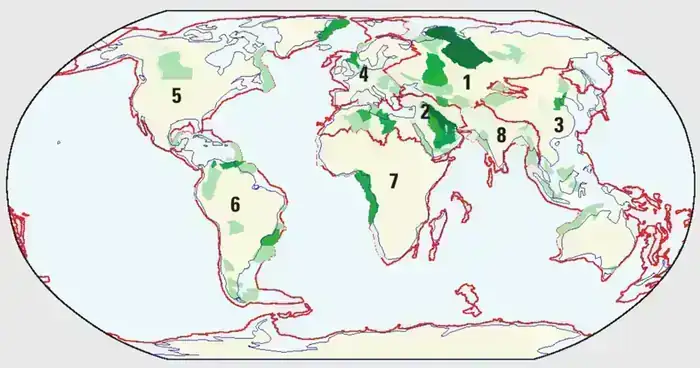

The claim
Abiogenic petroleum theory holds that hydrocarbons are primordial or mantle-derived, migrating upward through faults rather than forming from buried organic matter. It was proposed in various forms from the nineteenth century, argued at length by the Soviet geologist Nikolai Kudryavtsev, and popularised in English by Thomas Gold in The Deep Hot Biosphere (1999). Gold also proposed that a deep microbial biosphere feeds on such hydrocarbons.
Maps, diagrams and images


The appeal is real. It would explain why oil appears in places that are not obviously source-rock basins, and it would mean the supply is not finite in the way the organic theory implies. That second implication is why the theory is popular in some political writing.
The evidence against
The chemistry is decisive. Petroleum contains biomarkers — molecules whose carbon skeletons are unmistakably derived from specific biological precursors, such as steranes from eukaryotic sterols and hopanes from bacterial lipids. It is optically active, meaning it rotates polarised light, which is a signature of biological synthesis. Its carbon isotope ratios match organic matter, not mantle carbon.
The geology is nearly as decisive. Commercial accumulations occur in sedimentary basins with organic-rich source rocks, at temperatures in the oil window, and not in crystalline basement or in mantle-derived rocks. Where hydrocarbons do occur in basement, they are almost always explained by migration from adjacent sediments.
True: abiotic hydrocarbons exist. Methane is produced by serpentinisation in mantle rocks, and it is found in some hydrothermal systems.
True: the 'fossil fuel' shorthand is misleading. Oil forms from buried microbial and algal matter, not from dinosaurs.
False: that commercial oil and gas accumulations are abiogenic. The biomarker and isotope evidence rules it out for every field tested.
False: that the theory has been suppressed. It has been tested: companies have drilled on its predictions, and the predictions have not produced a commercial field.
Why it is in the archive
Because it is a genuinely scientific-sounding alternative with a real literature behind it, and the way it fails is instructive: not on rhetoric but on molecules that could only have come from living things. The archive labels it fringe rather than debunked because abiotic methane is real — it is the commercial-oil claim that fails.
Open resources on this topic
- PapersOpen-access articles: DOAJ · PubMed Central · Internet Archive Scholar
- BooksPublic-domain and borrowable copies: Open Library · Project Gutenberg · Google Books · Internet Archive
Cite this page
Momin, S. (2026). Abiogenic Petroleum. The Larger World Archive. https://drsamonline.github.io/LARGE_GLOBE/abiogenic-petroleum.htmlMomin, Sohil. “Abiogenic Petroleum.” The Larger World Archive, 2026, https://drsamonline.github.io/LARGE_GLOBE/abiogenic-petroleum.html.Momin, Sohil. “Abiogenic Petroleum.” The Larger World Archive, 2026. https://drsamonline.github.io/LARGE_GLOBE/abiogenic-petroleum.html.@misc{abiogenic2026abiogenic,
author = {Momin, Sohil},
title = {Abiogenic Petroleum},
year = {2026},
howpublished = {The Larger World Archive},
url = {https://drsamonline.github.io/LARGE_GLOBE/abiogenic-petroleum.html},
note = {Last reviewed 20 November 2026}
}Last reviewed 20 November 2026 · Corrections policy · this page is not peer reviewed
Sources for this page
- Wikipedia, “Abiogenic petroleum origin” — the claim and the refutationsen.wikipedia.org
- Wikipedia, “Petroleum” — formation, migration and accumulationen.wikipedia.org
- Wikipedia, “Biomarker (petroleum)” — the molecules that settle iten.wikipedia.org
- Wikipedia, “Serpentinization” — the real abiotic methane pathwayen.wikipedia.org